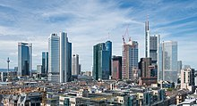

Frankfurt am Main ist mit 773.068 Einwohnern
(stand: 31.12.2022) die bevölkerungsreichste
Stadt des Landes Hessen und die fünftgrößte
Deutschlands. Sie ist kreisfrei und bildet
das Zentrum des Ballungsraums Frankfurt mit
mehr als 2,3 Millionen Einwohnern. In der
Metropolregion Frankfurt/Rhein-Main
(Rhein-Main-Gebiet) leben etwa 5,8 Millionen
Menschen.

Frankfurt
Europäische Zentralbank
Wertpapierbörse
Frankfurt am Main ist ein internationaler
Finanzplatz, bedeutendes Industrie-,
Dienstleistungs- und Messezentrum und zählt
zu den ökonomischen Weltstädten. Frankfurt
am Main ist Sitz der Europäischen Zentralbank,
der Deutschen Bundesbank, der Frankfurter
Wertpapierbörse, zahlreicher Finanzinstitute
(darunter Deutsche Bank,
Commerzbank, DZ Bank, KfW), der
Aufsichtsbehörden BaFin und EIOPA und der
Messe Frankfurt. Die Frankfurter Buchmesse
und die Musikmesse gelten als Weltleitmessen
ihrer Sparten, die Internationale
Automobil-Ausstellung fand hier bis 2019
statt. Die Stadt ist zudem Sitz vieler nationaler
Sportverbände, darunter der Deutsche Olympische
Sportbund und der Deutsche Fußball-Bund.